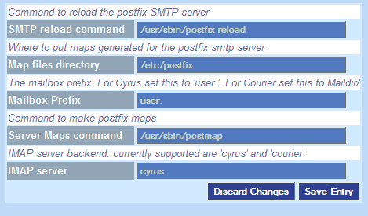

Mail Configuration
Customize the settings for your SMTP server, usually Postfix, and IMAP server, usually Cyrus or Courier.

On Debian customize the postfix settings like so:
SMTP Reload command - /etc/init.d/postfix reload
Return to Configuring ISPMan